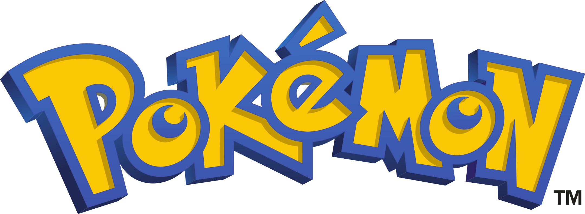
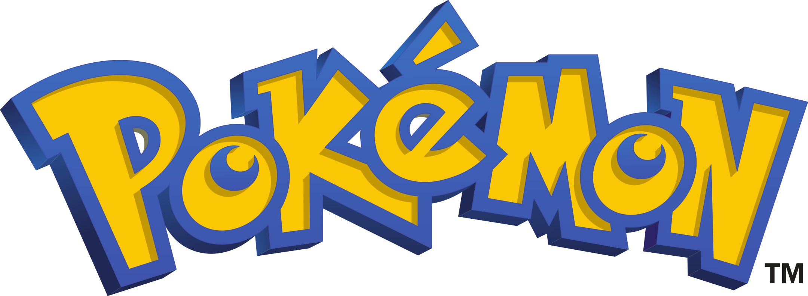

-
Bulbasaur #0001

- Grama
- Veneno
Há uma semente de planta nas suas costa desde o dia que este pokémon nasce. A semente cresce lentamente.
-
Ivusaur #0002

- Grama
- Veneno
Quando o bulbo em suas costas cresce, ele parece perder a capacidade de ficar em suas patas.
-
Venusaur #0003

- Grama
- Veneno
Sua planta floresce quando está absorvendo energia solar. Ele fica em movimento para buscar a luz solar
-
Charmander #0004

- Fogo
Tem preferência por coisas quentes. Quando chove, diz-se que o vapor jorra da ponta da cauda.
-
Charmeleon #0005

- Fogo
Tem uma natureza bárbara. Em batalha, ele chicoteia sua cauda ardente e corta com garras afiadas.
-
Charizard #0006

- Fogo
- Voador
Ele cospe fogo que é quente o suficiente para derreter pedregulhos. Pode causar incêndios florestais ao soprar chamas.
-
Squirtle #0007

- Água
Quando retrai seu pescoço longo em sua concha, ele esguicha água com força vigorosa.
-
Wartortle #0008

- Água
É reconhecido como um símbolo de longevidade. Se sua casca tem algas, esse Wartortle é muito antigo.
-
Blastoise #0009

- Água
Ele esmaga seu inimiggo sob seu corpo pesado para causar desmaio. Em um beliscão, ele se retirará dentro de sua concha.
-
Caterpie #0010

- Inseto
Para proteção, ele libera um mau cheiro horrível da antena em sua cabeça para afastar os inimigos.
-
Metapod #0011

- Inseto
É esperar o momento para evoluir. Nesta fase, ele só pode endurecer, por isso permanece imóvel para evitar o ataque.
-
Butterfree #0012

- Inseto
- Voador
Em batalha, ele bate as asas em grande velocidade para liberar poeira altamente tóxica no ar.
-
Weedle #0013

- Inseto
- Veneno
Cuidado com o ferrão afiado na cabeça. Esconde-se na grama e nos arbustos onde come folhas.
-
Kakuna #0014

- Inseto
- Veneno
Capaz de se mover apenas ligeiramente. Quando ameaçado, pode espetar seu ferrão e envenenar seu inimigo.
-
Beedrill #0015

- Inseto
- Veneno
Tem três ferrões venenosos nas patas dianteiras e na cauda. Eles são usados para atacar seu inimigo repetidamente.
Proxima Pagina
 
